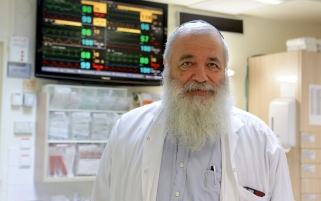

כ”ח שנים מאז הגיעו הרב חנן ורעייתו אורלי כוחונובסקי בשליחות הרבי מה”מ לשכונת ‘רמ
כ”ח שנים מאז הגיעו הרב חנן ורעייתו אורלי כוחונובסקי בשליחות הרבי מה”מ לשכונת ‘רמת אליהו’ בראשון לציון, שם הפכו לחלק בלתי נפרד מהנוף. בני הזוג בנו מעצמה של ממש, כשהם פוגשים את תושבי השכונה בכל שלב בחייהם, החל מברית המילה * יצאתי לפגוש מקרוב את אחד מבתי חב”ד השוקקים והפעילים בגוש דן, וחזרתי בהתפעמות.
כ”ח שנים מאז הגיעו הרב חנן ורעייתו אורלי כוחונובסקי בשליחות הרבי מה”מ לשכונת ‘רמת אליהו’ בראשון לציון, שם הפכו לחלק בלתי נפרד מהנוף. בני הזוג בנו מעצמה של ממש, כשהם פוגשים את תושבי השכונה בכל שלב בחייהם, החל מברית המילה * יצאתי לפגוש מקרוב את אחד מבתי חב”ד השוקקים והפעילים בגוש דן, וחזרתי בהתפעמות.
מאת י’ ועקנין

נתחיל מהתחלה. כיצד הגעתם לשכונת רמת אליהו בראשון לציון?
“הגענו לשכונה לפני כ”ח שנים”, מפליג הרב כוחונובסקי לאחור. “הרב גרוזמן, השליח לראשון לציון, שאז עוד היה יחיד בעיר, הציע לנו להצטרף לשליחות בראשון לציון. קיבלנו אז מספר הצעות אותן כתבנו לרבי, והרבי הקיף את ההצעה של רמת אליהו והוסיף ‘ברכה והצלחה’. מאז אנחנו כאן”. כשהוא אומר ‘אנחנו כאן’, הוא מתכוון לכך במלוא הרצינות. לאורך כל שעות היממה הוא ורעייתו אורלי זמינים לכולם, בעשותם עבודת קודש במסירות יוצאת דופן.
“שכונת ‘רמת אליהו’ היא אחת השכונות הוותיקות והמרכזיות בראשון לציון ומונה כיום קרוב לארבעה עשר אלף תושבים. רוב תושבי השכונה הנם יוצאי עדות המזרח. במהלך השנים הוקמה בצמוד לשכונה, גם שכונת ‘נווה ים’, בה מתגוררים קרוב לאחד עשר אלף תושבים, ואנו פועלים בשתיהן”.
במשך השנים, ראשון לציון גדלה והתרחבה, ושלוחים רבים נוספים הצטרפו למשפחה המונה כיום כשלושים שלוחים בעיר.
“אתם מצליחים יותר מידי”
ההתחלה לא הייתה קלה. בשלב הראשון ר’ חנן נדד מבית כנסת לבית כנסת, כשבכל מקום דאג למסור שיעורי תורה. לאחר חצי שנה שכר חנות במרכז המסחרי של השכונה. קיוסק קטן שהפך למוקד פעילות. השמועה עברה מפה לאוזן, והמקום הפך לשוקק פעילות. לאורך כל היום אנשים הגיעו כדי לקבל שירות יהודי, ובית חב”ד החל להתפרסם בקרב התושבים כמקום נעים המקבל כל אדם באהבה גדולה.
היה גם מי שהמקום הפך לצנינים בעיניו. “בעל הבית, ממנו שכרנו את המקום, שם לב שהמקום הומה אדם, והחליט כנראה שעליו לנצל לטובתו את העובדה הזו. ביום בהיר אחד הודיע לנו שעלינו להתקפל מהמקום, כיוון שהוא רוצה לפתוח שם את העסק שלו. למרות ששילמנו לו מספר חודשים מראש, נאלצנו לצאת משם מבלי לקבל את הכסף בחזרה. מכיוון שלא רצינו להיות מעורבים בסכסוך כזה או אחר, ויתרנו והמשכנו הלאה”.
“העירייה הציעה לנו להמשיך בפעילות מתוך מקלט ישן הממוקם בלב השכונה. הגענו למקום וחשכו עינינו. המקום היה מוזנח וחשוך, מלא פעילות אך מהסוג השלילי…” הרב חנן ורעייתו לא הרימו ידיים. הם ניקו את המקום במו ידיהם, שיפצו אותו והפכו את המקום לפנינה של ממש. קולות אחרים החלו להישמע משם; קולות של תורה, של תפילה ושל חסד. מי שהגיע למקום לא האמין למראה עיניו. המקלט היה נראה מזמין ומואר. בית הכנסת החל לפעול בו באופן סדיר לצד החדר לקבלת קהל, וחנות יודאיקה. בהמשך הוסיפו ובנו למעלה והרחיבו את המקום שהכיל את הקהל הרב והצרכים השונים. זו היתה אימפריה של ממש מתחת לאדמה. במקביל גם יזמו פרויקטים לעזר עבור אנשי הקהילה, כמו כן פעלו רבות עם ילדי השכונה. “עד היום יש אנשים שמזכירים לנו את הקייטנות המלהיבות והמושקעות שעשינו עבורם”, אומר הרב חנן.
“לא אעזוב את העולם לפני שבית הכנסת יוקם!”
כיום מתנוסס בקו התפר של שתי השכונות, בניין חדש ומרשים המתנשא לגובה של ארבע קומות המעיד יותר מכל על החריש העמוק שנעשה במקום.
איך הגעתם ממקלט לבניין של ארבע קומות?
“לאחר חמש עשרה שנה בערך, קיבלנו שטח מהעירייה לבנות עליו את בית חב”ד. הבנין הוקם לאט לאט. כמו בעוד מקרים, גם פה הבנייה נתקעה בשלב מסוים מחוסר אמצעים.
“מול מבנה בית הכנסת שהלך ונבנה, התגוררה אישה מבוגרת ששמה לב שהבניה נעצרה. אותה אישה, מסתבר, היתה קשורה בקשר משפחתי למשפחה עשירה מאוד מחוץ לארץ. היא יצרה איתם קשר והודיעה להם חד–משמעית שבית הכנסת צריך להיות מוקם לפני שהיא עוברת לעולם שכולו טוב… הקרובים נחלצו ותרמו מהונם, וכך הבנייה התקדמה עד לסוף הטוב. אותה אישה לא רק שזכתה לראות את בית הכנסת בתפארתו, אלא זכתה לעוד עשר שנים טובות, כשהיא נחשפת מקרוב לפעילות הברוכה של בית חב”ד”.
מבנה בית חב”ד המרשים אוגד בתוכו תחומי פעילות רבים; שוכנים בו אולם שמחות, מקווה טהרה, מרכז חסד, בית כנסת מפואר, כולל, מכון בר מצווה, משרד לקבלת קהל, ועוד. המבנה גבוה ומרשים ומתנוסס מעל בתי האזור, רובם בתים פרטיים.
כאוהלו של אברהם אבינו, גם בו מצויים שני פתחים - האחד מכיוון שכונת ‘רמת אליהו’ והשני מכיוון שכונת ‘נווה ים’.
עם קבלת המפתחות דרשה העירייה חזרה את מפתחות המקלט. “הפרידה מהמקום הקודם היתה לא קלה… במיוחד עבור אשתי. בנינו את המקום בעשר אצבעות ממש, וחדרנו לליבם של תושבי השכונה. לא קל היה לעזוב, אך הסתכלנו קדימה וידענו שהרבי ממנף את הפעילות עכשיו לגבהים חדשים”…
אנשי הקהילה מצדם לא עזבו את השלוחים האהובים, והמשיכו להגיע למקום החדש למרות שהיה מעט יותר רחוק. הוותיקים שביניהם טענו, כי גם בהיותם במקלט הקטן והצפוף, הרגישו שהם נמצאים בארמון. מן הצד השני, למרות שכיום הם נמצאים במבנה גדול ומרווח, הם עדיין מרגישים את היחס האישי והקרוב.
מחשבה יוצרת מציאות
הרבנית אורלי כוחונובסקי מצטרפת לשיחה, ומשתפת באפיזודה אישית הקשורה לבניין; אפשר לומר שזו אחת מאבני הדרך והיסוד לפעילותם.
“לפני נישואינו, בעלי למד ב–770 ושלח לי משם את ההזמנה לחתונה שאייר במו ידיו. על ההזמנה ראיתי ציור מקסים של מבנה גבוה המתנוסס מעל הר ומסביבו בתים קטנים. על המבנה היה שלט “בית חב”ד”, שם צירף בכתב ידו ‘הקבלנים של הבנין חנן ואורלי כוחונובסקי. מועד הבנייה: י”ד אלול [תאריך החתונה - י.ו.] לגרום נחת רוח לרבי מלך המשיח!’ במילים ספורות אלו הוא תמצת את החלום והשאיפה הגדולה שלו.
“כשהתחלנו לבנות את הבנין החדש, חשבנו שזה שטח נטוש ורחוק מכל הבתים, אך במהלך הבנייה התברר שמסביב לבית חב”ד נבנות וילות רבות. כך נוצר מצב שבית חב”ד הגבוה התנשא מעל הוילות, בדיוק כמו שבעלי צייר על ההזמנה…
“האמת היא, שמאז החתונה ועד שהתחלנו לבנות, הענין בפועל נשכח במגירות הזיכרון. שבת אחת, אחד האורחים שהתארח אצלנו העיר את תשומת ליבנו לציור אותו הדפסנו גם על הברכון. ‘שמתם לב שבית חב”ד שלכם באמת נמצא גבוה מעל כל בתי השכונה?’ לרגע היינו בהלם. זה בהחלט הייתה מעין ‘סגירת מעגל’. נוכחנו לדעת שאם אדם מאמין ורוצה להגיע למטרה, הוא יגיע בדיוק כמו שהוא שואף. על כך נאמר ‘מחשבה יוצרת מציאות’”, היא מסכמת בהתרגשות.
המניין שגדל וגדל בהדרכת הרבי
בני הקהילה של הרב חנן כוחונובסקי היו בעיקר מעדות מזרח. כבר בהתחלה התייעצו השלוחים עם הרבי כיצד לנהל את המניין. “שאלנו את הרבי האם להנהיג מניין חב”די, או מניין ספרדי ברוח חב”ד. הרבי הקיף את המילים ‘ספרדי ברוח חב”ד’ והוסיף בכתב יד קדשו “כן יעשה, ותהא פעולה הנמשכת, אזכיר עה”צ”. כך בעצם המניין מתנהל, בנוסח ספרד אך עם התוספות והטאצ’ החסידי חב”די, כמו למשל ניגוני חב”ד, מה שקירב מאוד את התושבים שנהנו להגיע לבית הכנסת ו’על הדרך’ השתתפו גם בשיעורי חסידות המועברים בטוב טעם על ידי הרב כוחונובסקי. אף שזמני התפילה מתארכים ביחס לבתי כנסת אחרים, התושבים אינם ממהרים לחזור הביתה אחרי התפילה. “המקום חם ומזמין”, הוא אומר.
מספר הרב כוחונובסקי: “אחד המתפללים הקבועים אהב מאד להגיע לבית הכנסת. בערב שבת היה נשאר עם כולם לשיעור, וכך יצא שהגיע באיחור לביתו. אשתו שלא התקרבה ליהדות בקצב שלו והיתה כמה שלבים אחריו, כעסה על הענין. היא היתה מגיעה לבית הכנסת בלבוש מתריס שאינו הולם את קדושתו של בית הכנסת, והיתה מתמרמרת על כך שבעלה לא מגיע הביתה בשעה סבירה. אשתי היתה יוצאת אליה ובאהבה גדולה מחבקת אותה ומציעה להיכנס לבית הכנסת ולהצטרף גם היא לתפילה. ההפצרות נענו ריקם; היא לא הסכימה בשום אופן להיכנס לבית הכנסת, ואף המשיכה לגדף. למרות זאת, אשתי לא התייאשה, ובכל פעם הזמינה אותה להיכנס. לבסוף המאמצים נשאו פרי. היא נכנסה, הוקסמה ונשבתה גם היא בעבותות האהבה. לאט לאט התחזקה ביהדות, והחלה לנהל חיים של שמירת מצוות. בכל הזדמנות היא מדגישה שבית חב”ד הוא המקום שהדליק לה את הלב וקיבל אותה כמו שהיא, מה שסלל אצלה את הדרך להמשך”.
כיום יש במנין הספרדי כשלוש מאות מתפללים (!) ובנוסף יש גם מנין חב”די מובהק בו מתפללים אנשי קהילת חב”ד, קהילה שצמחה עם השנים בעקבות הפעילות של הרב כוחונובסקי. “ככה זכינו ברוך ה’ ליהנות משני העולמות”, הוא מחייך.
מסביב לשעון
הרב והרבנית כוחונובסקי מלווים את תושבי המקום בכל דבר וענין, כבר מגיל לידה, שכן בין שלל תפקידיו, משמש הרב כוחונובסקי כמוהל. כך הוא זוכה להיפגש עם רבים מבני השכונה כבר בברית המילה לילדיהם. רבים מהם גדלו ובאו בברית הנישואין, ושוב ניצבת דמותו הגבוהה והמרשימה של הרב חנן תחת החופה, כשהוא מסדר להם חופה וקידושין. לשאלתי, הוא תמיד שמח לחזור להיפגש עם הזוג הצעיר בברית המילה של בנם, או בחגיגת זבד הבת…
גם כשהם מגיעים לגיל שלוש, עורך הרב כוחונובסקי את טקס ה’חלאקה’ בבית חב”ד, מושג שהיה זר לרבים מבני הקהילה והפך להיות חלק מהם. בהגיעם לגיל מצוות הם מגיעים להתכונן לבר מצווה ב’מכון מצווה’ שהקים, שם הם מקבלים הדרכה לקראת היום הגדול - על מהות בר מצווה, הנחת תפילין, וכמובן הקריאה בתורה. פעמים רבות, אביו של הילד מגיע ומצטרף בעצמו לשיעורים ו”מרענן” את ידיעותיו בהנחת תפילין.
אשתו, הרבנית אורלי, עומדת בקשר הדוק עם נשות הקהילה בכל פרט וענין, ומדריכה אותן לקיום מצוות מתוך קירוב לבבי.
שניהם יחד מפעילים גם את מפעל החסד הענק, ותומכים בנזקקים בחבילות מזון. בכל שבוע הם מחלקים כמאה וחמישים סלי מזון, כאשר בחגים המספר נוסק לשש מאות(!).
אין זה קל לנהל קהילה כה גדולה בעלת אוכלוסיה הטרוגנית. הרב חנן ורעייתו משקיעים רבות כדי לנהל את הקהילה ולשמור עליה מאוחדת. לשם כך הם עורכים לאורך השנה “שבתות אחדות”.
כשהם מדברים על שלום ואחדות בקהילה, הכוונה לא רק בין משפחות, אלא גם בתוך המשפחות עצמן.
“היינו אז בשנה הראשונה לנישואינו עם תינוקת קטנה כבת חודש” נזכר הרב כוחונובסקי, “הגיעו אלינו זוג צעיר שהיו על סף גירושין. דיברנו איתם ובסופו של דבר כתבנו יחד לרבי באגרות קודש. תשובת הרבי הייתה שיש לחזק את הענין של שלום בית. הם היו המומים מהתשובה הישירה שקיבלו, ובו במקום החליטו להשקיע בקשר.
“בד בבד התחזקו בתורה ומצוות והפכו לזוג שומר מצוות, כשהם מגדלים משפחה ברוכה. עד היום הם זוכרים לטובה את המפגש עם בית חב”ד כרגע ששינה להם את החיים”.
בנוסף לשבתות האחדות, הרב כוחונובסקי ורעייתו עורכים סעודות חג עם בני הקהילה ודואגים גם לאנשים בודדים, כמו גם לאלו שאינם יודעים כיצד לחגוג את החג בביתם”.
גם פה, הרב כוחונובסקי נזכר בסיפור מרגש שאירע: “באחד מלילי הסדר הציבוריים שערכנו, הגיעו זוג מבוגרים. הבעל היה סיעודי ואשתו הובילה אותו בכיסא גלגלים. ידענו שהוא חולה באלצהיימר, אך לא ידענו בדיוק מה מצבו. לאורך קריאת ההגדה והשירים ששרו כולם יחד, שמנו לב שהאיש מתעורר לחיים ומצטרף לשירה, בעוד אשתו היתה נראית נרגשת מאוד. עם סיום הסעודה, ניגשה אלינו האישה כשדמעות בעיניה והודתה לנו ‘על החג הכי שמח שהיה לי עד היום’. היא שיתפה אותנו בהתרגשות שבעלה לא מתקשר כלל זו תקופה ארוכה, והיום לפתע כמו התעורר לתחייה, כשהחל לשיר יחד עם כולם”, מסיים הרב כוחונובסקי ועיניו בורקות. ניכר בו כי הוא חוזר לאותה שעת לילה מאוחרת, ליל גאולה של חג הפסח.
כל כך הרבה פעילויות. איך מספיקים לעשות את הכל?
“הבית הראשון שלנו זה בית חב”ד”, אומר הרב כוחונובסקי בעיניים נוצצות ומלאות סיפוק. “בערב אנחנו הולכים להפוגה ולמנוחה קצרה בבית השני, וזה במקרה שאין חתונה באותו ערב”.
מתי אתה מתחיל את היום שלך?
“היום מתחיל בשעה חמש בבוקר עם המנין הראשון ומסתיים אי שם בערבו של יום. הילדים שלנו גם הם גדלו לאווירה של שליחות, וכיום הם מצטרפים בעצמם בכל מרצם לעניינים של בית חב”ד, וזו נחת אמיתית. הבן הגדול שלנו נמצא כעת בשנת ה’קבוצה’ אך הוא דואג לסייע בשלט רחוק. בין השאר הוא מקבל ב–770 את הקבוצות מהקהילה המגיעות לרבי. הבנים האחרים נמצאים בישיבה, כשהם מגיעים לחופשה, מיד נרתמים לפעילות של בית חב”ד בשמחה ובמרץ”. אי אפשר שלא לראות את הבעת הנחת החסידי העולה על פניו של הרב חנן.
מכינים את השכונה לגאולה
בשכונות ‘רמת אליהו’ ו’נווה ים’ כולם יודעים מיהו הרבי מלך המשיח ומחכים לו. הם מבינים שהוראותיו של הרבי נצחיות, והם מתקשרים אליו בסיועם של השלוחים.
“בבית הכנסת אנשים מקשיבים בשקיקה לדברי התורה המשולבים לכל אורכם בשיחותיו של הרבי, כמו גם עניני גאולה ומשיח. הם יודעים שיש כתובת לכל עניין יהודי, ומול תמונתו הגדולה של הרבי הם יושבים וכותבים לרבי באמצעות האגרות קודש, ואף מקבלים החלטות טובות. אני מדגיש בכל פעם, כי מעבר להתקדמותם האישית בתורה ומצוות, הם מקדמים את העולם כולו בעוד צעד לקראת משיח. המסרים הללו מחלחלים ומתקבלים”.
מה המסר שלכם לאחרים שרוצים לפעול בשליחות?
“הכח של כל שליח הוא מהרבי, ורואים זאת במוחש. אם הגעת למקום מסויים, תפעל כמה שאתה יכול ותנצל את הכישורים שה’ טבע בך. אתה צריך שיהיה לך את הרצון ואת החזון ועם זה לצאת לדרך, עד שלבסוף תגיע למטרה. כשזה יקרה, אתה תגדיר מיד אתגר חדש. כל עוד אנחנו בגלות, יש עוד הרבה מה לעשות. העם צמא למילה טובה, לחיוך ולקירוב - ועם אלה ניתן להגיע לכל אחד.
“אין ספק ששליחות דורשת השקעה רבה ומסירות אין קץ, אבל אני יכול להעיד, שאת הברכה רואים לא רק בעשייה, אלא גם בבית פנימה”.